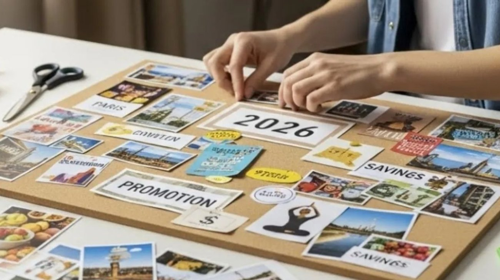

Vision Board Productivo: Crea tu Año con Propósito y Acción
5 min de lectura

¿Te imaginas iniciar el año con total claridad sobre tus metas?
Cada enero, millones de personas hacen listas de propósitos. Pero, ¿cuántos realmente los cumplen? La diferencia entre soñar y lograr está en la claridad, el enfoque y la acción diaria. Aquí es donde entra el “vision board productivo”: una herramienta visual y estratégica para transformar tus deseos en resultados concretos.
¿Qué es un vision board productivo?
Un vision board, o tablero de visión, es una representación visual de tus sueños, metas y aspiraciones. Pero un vision board productivo va mucho más allá de recortes bonitos: es un mapa estratégico que te impulsa a la acción, te motiva y te recuerda cada día hacia dónde vas.
- No es solo decoración: Es una brújula para tu año.
- No es solo inspiración: Es compromiso con tus objetivos.
- No es solo visual: Es emocional, estratégico y práctico.
Un vision board productivo convierte la inspiración en acción y te ayuda a mantener el rumbo incluso cuando la motivación flaquea.
¿Por qué hacer un vision board productivo al inicio del año?
El inicio del año es el momento perfecto para redefinir tu rumbo y visualizar lo que quieres lograr. Un vision board te ayuda a:
- Clarificar lo que realmente deseas.
- Mantener el enfoque cuando la motivación baja.
- Celebrar avances y ajustar el camino.
- Visualizar el proceso y no solo el resultado.
Estudios en psicología demuestran que visualizar tus metas aumenta la probabilidad de cumplirlas. Al verlas todos los días, tu cerebro trabaja en ellas incluso cuando no eres consciente.
Preguntas poderosas para tu vision board productivo
Antes de empezar, tómate un momento para reflexionar. Hazte preguntas profundas que te conecten con lo que realmente quieres este año:
- ¿Qué quiero sentir cada día al despertar?
- ¿Qué logros me harían sentir orgulloso/a en diciembre?
- ¿Qué hábitos quiero incorporar o dejar atrás?
- ¿A quién quiero ayudar o inspirar con mi trabajo?
- ¿Qué experiencias nuevas deseo vivir?
- ¿Qué áreas de mi vida necesitan más atención (salud, relaciones, finanzas, creatividad, aprendizaje, bienestar)?
- ¿Cómo se ve mi mejor versión a final de año?
- ¿Qué miedos quiero superar?
- ¿Qué recursos necesito para lograr mis metas?
- ¿Qué tipo de energía quiero atraer a mi vida y mi entorno de trabajo?
Tómate el tiempo de escribir las respuestas. Son la base de un vision board auténtico y alineado contigo.
¿Cómo hacer un vision board productivo? Paso a paso
1. Define tus áreas clave
No intentes poner todo en tu vision board. Elige 4 a 6 áreas prioritarias para tu año. Ejemplos:
- Carrera y proyectos profesionales
- Salud y bienestar físico/mental
- Finanzas
- Creatividad y aprendizaje
- Relaciones y comunidad
- Viajes y experiencias
2. Escribe objetivos claros y medibles
Convierte tus deseos en metas SMART (específicas, medibles, alcanzables, relevantes y con plazo). Ejemplo:
- “Correr un maratón en noviembre”
- “Lanzar mi primer podcast antes de junio”
- “Ahorrar 20,000 MXN para viajar”
- “Conseguir 5 nuevos clientes internacionales”
- “Leer 12 libros en el año”
3. Busca imágenes, palabras y símbolos poderosos
Recorta revistas, imprime fotos, busca frases que te inspiren. Piensa en imágenes que te conecten emocionalmente con tus metas:
- Fotos de lugares que quieres visitar
- Imágenes de personas que te inspiran
- Palabras clave (“valentía”, “creatividad”, “salud”)
- Dibujos, stickers, mapas, citas
4. Elige tu formato: físico o digital
- Físico: Cartulina, corcho, pizarrón. Ideal si te gusta lo tangible y manual.
- Digital: Herramientas como Canva, Pinterest, Miro o Trello. Perfecto si quieres llevarlo en tu celular o laptop.
5. Arma tu tablero con intención
No pegues todo al azar. Agrupa por áreas, usa colores, deja espacio para nuevas metas. Hazlo atractivo y armonioso para ti.
6. Coloca tu vision board donde lo veas diario
En tu escritorio, pared, fondo de pantalla o app favorita. Lo importante es que sea visible y te recuerde tu rumbo.
7. Revísalo y actualízalo periódicamente
El vision board no es estático. Cada mes, celebra avances, ajusta metas y agrega nuevos sueños.
Consejos prácticos para un vision board realmente productivo
- Sé honesto/a contigo: No pongas lo que “deberías” querer, sino lo que realmente deseas.
- Combina inspiración y acción: Por cada imagen inspiradora, agrega un mini-plan de acción.
- Incluye hábitos, no solo logros: Ejemplo: “Meditar 10 minutos diarios”, “leer un libro al mes”.
- Visualiza el proceso, no solo el resultado: Imágenes de esfuerzo, disciplina, rutinas.
- Agrega recordatorios de autocuidado: Tu energía es tu principal recurso.
- Hazlo bonito para ti: Usa colores, texturas y frases que te motiven.
- Incluye un mantra o afirmación central: Una frase que te recuerde tu propósito (“Este año, me atrevo a más”).
- Integra fechas importantes: Marca lanzamientos, viajes o milestones.
- Deja espacio para lo inesperado: La vida siempre trae sorpresas.
Herramientas recomendadas para tu vision board productivo
Materiales
- Cartulina, corcho o pizarrón blanco
- Post-its de colores
- Revistas y tijeras
- Pegamento, washi tape, marcadores
- Stickers motivacionales
Herramientas digitales
- Canva: Plantillas para vision boards digitales, fácil de personalizar y descargar.
- Pinterest: Tableros de inspiración, ideal para coleccionar imágenes y frases.
- Miro: Pizarras colaborativas, perfecto para equipos o mastermind groups.
- Trello: Tableros tipo kanban con listas de metas, acciones y seguimiento.
- Notion: Bases de datos, galerías y seguimiento de hábitos/metas.
- Google Slides o PowerPoint: Para crear presentaciones visuales de tus metas.
- Apps móviles: “Vision Board”, “Gratitude”, “Dreamer” para llevar tu tablero siempre contigo.
Extra: Vision board en coworking
¿Sabías que hacer tu vision board en un coworking como The Pool puede potenciar tu creatividad? Rodéate de personas que también están diseñando su año y comparte ideas, imágenes y consejos. Incluso puedes organizar una sesión grupal para crear tableros juntos.
Cómo el coworking potencia tu vision board productivo
¿Te has preguntado por qué tantas personas creativas y enfocadas eligen empezar su año en un coworking? En The Pool, hemos visto que enero y febrero son meses donde nuestros poolers llegan con energía renovada, materiales en mano y muchas ganas de planear su año. No es casualidad: el ambiente de coworking es el espacio ideal para aterrizar tus sueños y convertirlos en planes concretos.
¿Por qué hacer tu vision board en un coworking como The Pool?
- Ambiente inspirador: Rodearte de personas que también están definiendo sus metas te contagia energía y motivación. Las conversaciones espontáneas y los ejemplos de otros poolers pueden darte ideas y enfoques que no habías considerado.
- Variedad de espacios: Puedes elegir una mesa grande para extender tus materiales, una sala tranquila para reflexionar o una terraza para dejarte inspirar por la luz natural.
- Herramientas y recursos: Desde impresoras hasta pizarras, pasando por café ilimitado y buena música, tienes todo lo que necesitas para entrar en “modo creativo”.
- Rituales de comunidad: En The Pool, algunos poolers ya tienen la tradición de reunirse a principios de año para hacer juntos su vision board, compartir avances y celebrar logros en comunidad. Incluso hemos visto a equipos completos usar la sala de juntas para planear su visión anual y alinear objetivos.
Anecdota:
“Cada enero, reservo una mesa en The Pool con dos amigas. Llevamos revistas, post-its y laptops. Entre café y risas, construimos nuestros vision boards y nos damos retroalimentación. Es un ritual que nos llena de energía y nos ayuda a empezar el año con claridad. Además, ver los vision boards de otros poolers en la pared nos inspira a pensar en grande.”
— Mariana, pooler y creadora de contenido
¿Sabías que…?
Algunos poolers han pegado sus vision boards en su locker o los usan como fondo de pantalla en las salas de The Pool, así los revisan cada vez que llegan y mantienen sus metas presentes durante todo el año.
Ejemplo de vision board productivo:
Imagina a Laura, diseñadora freelance. Su vision board incluye:
- Una foto de un estudio creativo (meta: rentar su propio espacio)
- Imágenes de comida saludable (meta: cocinar 4 veces por semana)
- Un boleto de avión (meta: viajar a Colombia)
- La portada de un libro (meta: publicar su primer e-book)
- Una frase: “Confío en mi proceso”
- Un gráfico de ingresos (meta: duplicar sus ventas)
- Un post-it: “Lunes: día de portafolio”
Cada imagen tiene un mini-plan de acción pegado al lado. Laura revisa su vision board cada mañana antes de empezar a trabajar, muchas veces desde su espacio favorito en The Pool.
Preguntas frecuentes sobre el vision board productivo
¿Es mejor hacerlo físico o digital?
Depende de tu estilo. Si te gusta lo manual y tangible, el físico es ideal. Si prefieres lo práctico y móvil, lo digital te permite llevarlo a todos lados.
¿Cuánto tiempo debo dedicarle?
Reserva al menos 2 horas para la primera versión. Después, dedica 5-10 minutos semanales para revisarlo y actualizarlo.
¿Puedo hacerlo en equipo o pareja?
¡Claro! Es muy poderoso compartir metas y apoyarse mutuamente. En coworkings puedes organizar sesiones grupales.
¿Y si cambio de metas a mitad de año?
¡Perfecto! El vision board es flexible. Actualízalo cuando lo necesites.
¿Funciona solo con imágenes?
No. Combina imágenes, palabras, cifras, fechas y planes de acción para hacerlo realmente productivo.
¿Y si me falta inspiración?
Busca ejemplos en Pinterest, pregunta a otros poolers, revisa tus logros pasados y permítete soñar en grande.
Obstáculos comunes y cómo superarlos
- No sé qué quiero: Tómate tiempo para reflexionar, haz las preguntas clave. No te presiones.
- Me cuesta visualizar lo que deseo: Busca inspiración en libros, podcasts, conversaciones o ejemplos de otros.
- Pierdo la motivación a mitad de año: Coloca tu vision board en un lugar visible y revisa tus avances cada mes.
- Me distraigo con metas ajenas: Recuerda que tu vision board es personal. No necesitas impresionar a nadie, solo conectar contigo.
Ritual de inicio de año: Crea tu vision board en comunidad
El proceso es más poderoso cuando lo compartes. ¿Qué tal organizar una tarde de vision boards en The Pool con música, materiales y buena vibra? Puedes invitar a colegas, amigos o familiares. Compartir sueños y metas los hace más reales y te da ideas nuevas.
¿Cómo organizar tu propio vision board day en The Pool?
- Reserva una sala o espacio común.
- Invita a colegas, amigos o familiares poolers.
- Trae materiales: revistas, tijeras, marcadores, laptops.
- Comparte tus metas, inspira y déjate inspirar.
- Toma fotos de tu vision board y colócalo en tu espacio favorito de The Pool.
Este año, regálate la claridad de saber hacia dónde vas y la motivación de verlo cada día. Un vision board productivo no es solo un collage: es tu mapa, tu recordatorio y tu motor.
¿Listo para crear el tuyo? Reserva un espacio en The Pool, trae tus materiales o tu laptop, y diseña tu año rodeado de inspiración y comunidad. Porque los grandes cambios empiezan con una visión clara y un entorno que te impulse.
Haz de 2026 el año en que tus sueños se convierten en metas, y tus metas en logros. ¡Empieza hoy tu vision board productivo en The Pool!
 ¿Y si tu equipo pudiera pensar diferente… desde Polanco?
¿Y si tu equipo pudiera pensar diferente… desde Polanco? Cómo diseñar un plan de trabajo híbrido exitoso para tu empresa
Cómo diseñar un plan de trabajo híbrido exitoso para tu empresa El Impacto del Coworking en la Productividad de los Empleados: ¿Cómo Afectan Estos Espacios a la Eficiencia Laboral?
El Impacto del Coworking en la Productividad de los Empleados: ¿Cómo Afectan Estos Espacios a la Eficiencia Laboral?